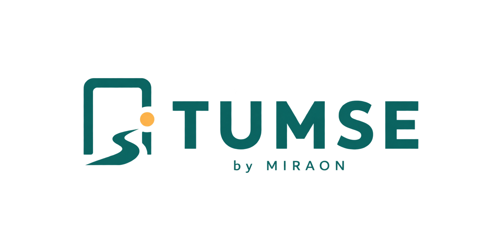

01 · Travel utilityConcept preview

일정 사이, 나만의 여행.
남은 시간을
지역 경험으로.
열차 출발 전 남은 시간과 이동 조건을 바탕으로, 부담 없이 다녀올 수 있는 주변 경험을 제안하는 여행 서비스입니다.
- 남은 시간 기반 추천
- 짐·날씨 조건 반영
- 복귀 안전 시간 고려
브랜드의 아이디어가 실제 경험으로 이어지도록, 명확한 구조와 세심한 인터랙션으로 서비스를 설계합니다.
Service
TUMSE의 핵심 흐름과 브랜드 경험을 간결하고 읽기 쉽게 소개합니다.

일정 사이, 나만의 여행.
열차 출발 전 남은 시간과 이동 조건을 바탕으로, 부담 없이 다녀올 수 있는 주변 경험을 제안하는 여행 서비스입니다.
Build together
브랜드, 웹, UI/UX와 새로운 디지털 서비스에 관해 이야기해 주세요.
서비스 문의 ↗